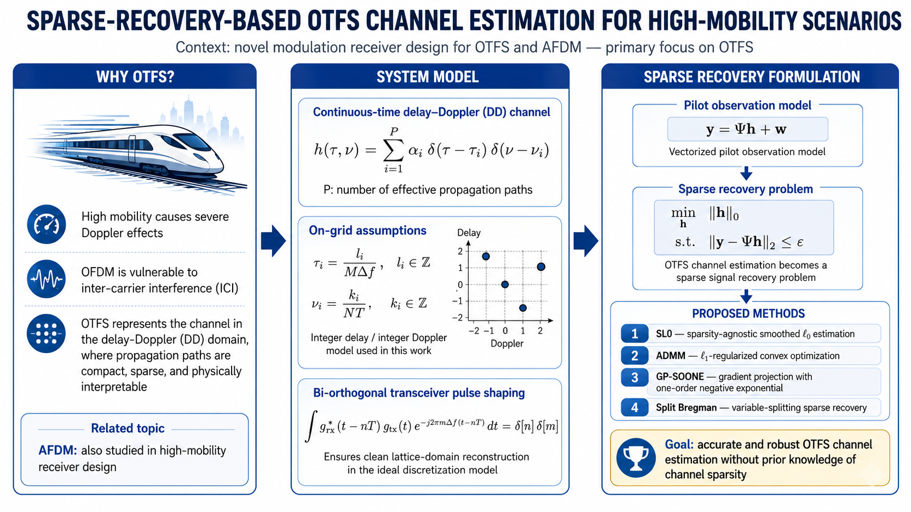

My Research Domains
Select a category to explore my various research directions. Click on a card to view detailed contents, derivations, and resources.

Ongoing
AI/ML for Wireless Communications
Using sensing/perception data and AI/ML-assisted communication physical layer tasks.

Past
LEO Satellite Communications
Applying cell-free (CF) massive MIMO concepts to low Earth orbit (LEO) satellites for capacity scaling and uplink optimization.

Past
Next-Generation Waveforms (OTFS/AFDM)
Channel estimation and detection algorithm design and performance analysis for OTFS and AFDM in high-mobility scenarios.
Future Concept
AI/ML for Positioning & Pre-6G
Conceptualizing new ideas for robust localization, load balancing, and next-generation architecture from industry experiences.